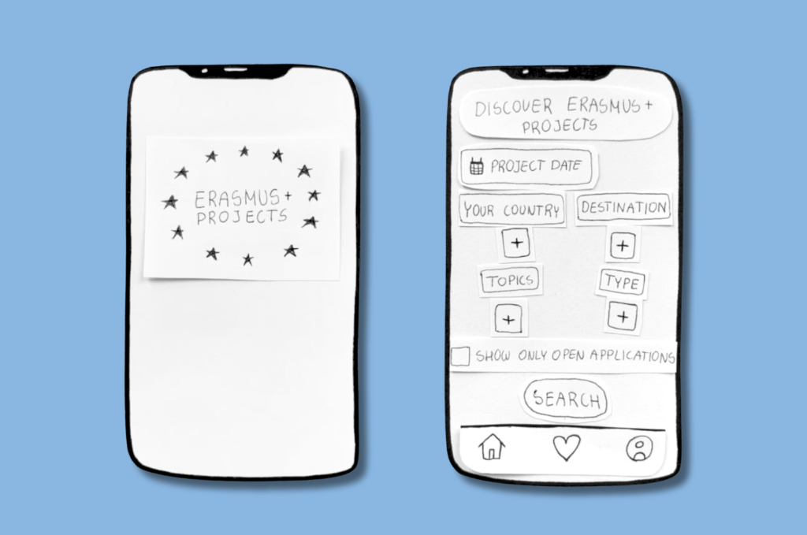
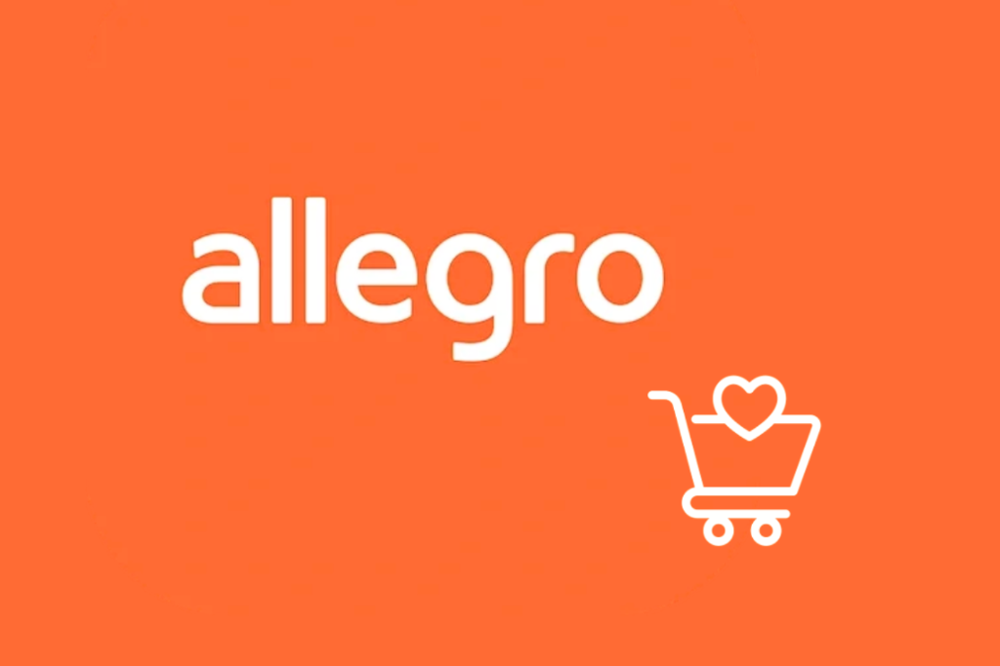
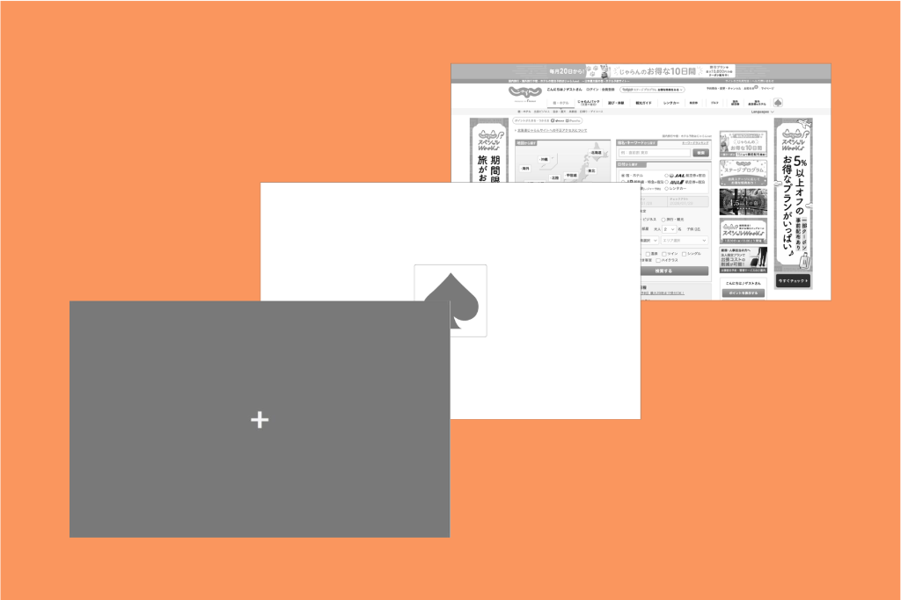
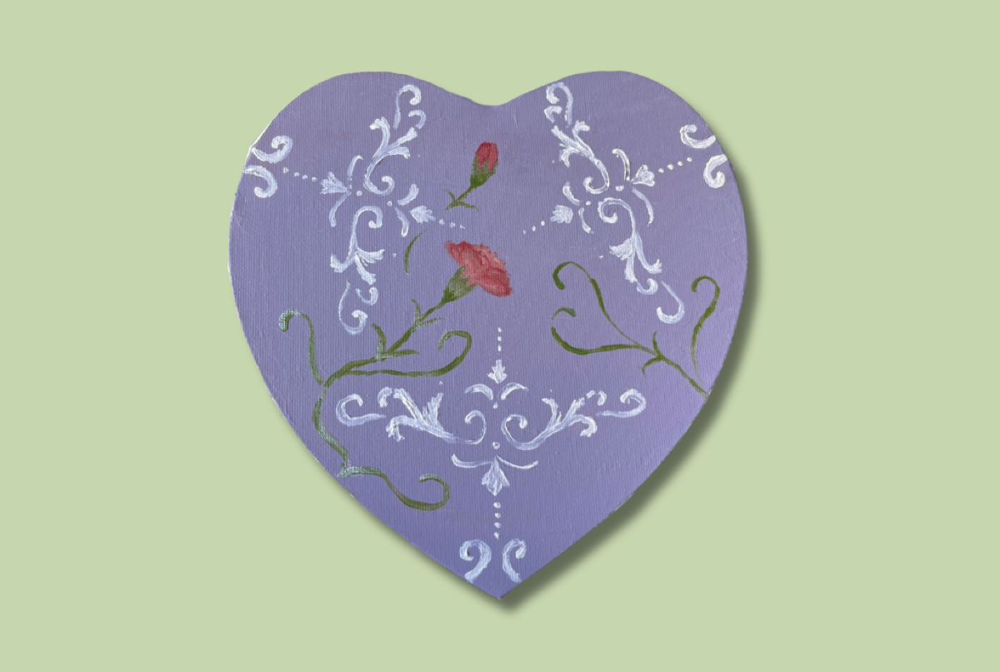

With a strong foundation in user psychology, eye-tracking research, and visual search efficiency. Fascinated by how cognitive processes shape digital experiences, I aim to combine data-driven research with creative prototyping to design intuitive, user-friendly interfaces.

Conceptual mobile app designed to centralize and simplify discovery and filtering of Erasmus+ Projects opportunities.

Academic collaboration evaluating layout navigation and prototyping optimizations for Poland's biggest e-commerce platform.

Master's thesis: "The Influence of Cognitive Styles on Visual Search Efficiency in Eastern and Western Interface Designs".

Original acrylic paintings showcasing a personal exploration of analog color, composition, and visual expression.
I actively participate in international projects, exploring new cultures and continuously developing myself. I express my energy and creativity by dancing, lifting weights at the gym, doing yoga, painting with acrylics, and doing other hand crafts. I also find balance and recharge by spending time in nature.